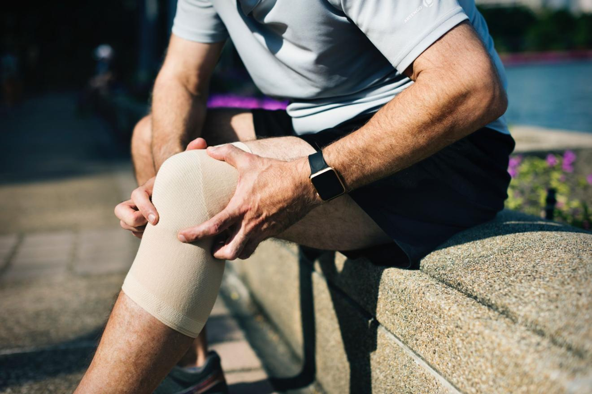

Your body is a machine you should know how to manage.
For a racecar driver or motorbike racer, success or failure relies on keeping their machine in good working order and improving it. Your body is no different. You need to know how to access it, maintain it, and optimize it.
This is one of the interesting “unexpected” lessons I gained since I started running about two years ago. I played sports growing up, but looking back I never really trained at any previous phrase in my life. While in the end I reached several high points through my run training, including two full marathons and two half-marathons, interestingly I feel like my biggest learning was about my body and ongoing maintenance and respect you need to treat it with.
One of the key aspects of bodily maintenance and improvement is mobility. As author and proponent of mobility training Kelly Starrett likes to say, “All human beings should be able to perform basic maintenance on themselves.”
What is mobility? Mobility are exercise practices to ensure you are ready to perform correctly in your sport or physical activity. It means both being “ready” such that you won’t hurt yourself but also “ready” such that you can perform at your best. We might summarize mobility as better movement patterns, a stronger body to hold those positions and massage techniques to release tensions.
Mobility is a popular topic these days in nearly all areas of fitness, sports and performance. For running, in particular, mobility is touted as one of the key factors to running injury-free, which includes mobility, stability (i.e. strength) and deep tissue release.
You shouldn’t think about mobility as limited to “pre-hab,” meaning exercises to prevent injury. In fact, improved movement patterns and better stability strength can improve your performance. This means bigger gains in your lifts at the gyms and faster times at your races. Improved mobility translates to less mental strain since you become a well-oiled machine. Personally I’ve seen how important mobility work can be to allowing me to train hard and perform at my best.
Like running itself (and a lot of other aspects of my life), mobility is something I track and measure. I believe all goals, especially those in health and fitness, should be tracked. (SEE: Why Track Your Workouts?) You should be tracking your goals from two sides: Are you putting in the the necessary time for that pursuit? (commitment time tracking) and Are you making improvements in that pursuit? (progress tracking). In the case of mobility, you can track your mobility through assessments (i.e. exercises to gauge where you are and your progress) and through logging the time you send on your mobility workouts themselves. For me that’s the essence of being data-driven: tracking so you can reach a goal more effectively.
In this post, we are going to look at mobility training. We start by defining the importance of mobility for both injury prevention and improved performance. We will then look at a few tests to assess your mobility and, consider how expansive a topic it is, I’ll share a bunch of resources for further study. Finally, we will look at how to build a mobility routine and how to track it in terms of your weekly time commitment and in terms of your strengths and weaknesses.
Running Injuries and Why Mobility Training?
A few years ago, I managed to get myself in good enough shape to run my first 5k non-stop, which I chronicled in Time to Run: A Beginner’s Journey Training to Run 5K. The training plan with the app I used was a mix of walking and running until I built up to non-stop runs. What I didn’t share there was that in the end I also got hurt too.
My heart and cardiovascular system improved such that I could easily manage a 20- to 40-minute daily run. Albeit slowly. But my body couldn’t handle it yet. My knees and ankles started hurting me enough that it pained me to run. It wasn’t bad at first, but eventually I had to stop running for nearly a month.
Like a lot of runners, especially beginners, I was a perfect case study of the 4 out of 5 runners who get injured running every year. For as much as running has grown in terms of participation at 5k’s, half-, and full marathons, a lot of runners are still getting injured, including myself.
In the running stat heard round the world: Nearly four out of five runners get injured per year, according to various research studies and two running books I reviewed in Some Great Books on Running. In “Anatomy for Runners,” Jay Dicqarry writes, “eighty-two percent of runners get injured,” and Peter Larson in “Tread Lightly” says that the “overall incidence of injury reported ranged from 19.4 to 79.3 percent.” That’s a lot of injuries.
There were a couple reasons I got hurt. But the main one was too much running volume on a weak body. While I could breath for 5k, my bones, tendons and movements couldn’t support the impact patterns and stress. I didn’t get an acute injury like breaking a leg, falling in a hole, torn ACL, etc. but I had suffered chronic injuries from overuse.
To put it another way, my engine had the power but my carriage or frame wasn’t strong enough to handle it.
This is a pretty common aliment for runners and is a pretty common mistake for beginner runners. We attempt to run more than our bodies are conditioned for. We don’t warm up or cool down properly. We don’t perform proper maintenance on our bodies. We aren’t strong in the right areas and our movement patterns aren’t ideal. These can all lead to injury.
Sure, we CAN run, but are we running well? Is our body strong, stable, and capable of proper movement patterns? In my case and like many others, the answer was “No.” I couldn’t move well. I wasn’t mobile or strong in the ways needed to run injury-free and for optimal, long-term performance.
The prevalence of injuries in running gets a lot of attention, and we hear a lot of non-runners claim that running is inherently bad for your body and health. It’s not long before you hear something like running wears out your knees, hips, etc. All of which is not true.
According to a lot of research, running and other sports improve our bones, knees and overall well-being, and if you are consider about living longer than one of the most important biomarkers and health metrics that is indicative of longevity is VO2 Max, which running is one of the ways at improving it.
Most injuries are a product of us not being “ready.” We have various physical limitations, poor movements, and weaknesses that, while they might not be a problem at first, can eventually lead to chronic pain and injury.
Mobility training is about building a body that can handle the requirements and stress of that sport and its movements. Its first goal is about injury prevention, but the added bonus of moving better and stronger is improved performance.
Fortunately, I’ve been largely injury-free since I added mobility training to my exercise life. While I still get stiff, sore, and occasional hot spots, which comes with tough workouts and racing, my body isn’t falling apart. I can listen to the aches and find my limits. When something is off, I incorporate targeting exercises for recovery, maintenance and improvement.
What is Mobility? Basics of Mobility Training, Injury Prevention and Optimizing Performance
What is mobility? Mobility training are a loose grouping of exercises, tools and techniques used to improve our bodies and their movement patterns.
Mobility might best be thought about in terms of “readiness” at both ends of the spectrum, both at the pre-hab and rehab stage of injury prevention and at the optimization stage of better performance. We remove limitations in our movement patterns, tissues, joints, and stability muscles as well as optimize our range of motion and strength for better performance. Quite simply mobility is about moving better so you are healthier and stronger.
A good summary of the three-fold nature of mobility is better movement patterns, a stronger body to hold those positions and massage techniques to release tensions.
In contrast to flexibility, which is your absolute, static range, mobility is about having the appropriate, functional and dynamic range of motion and strength for your desired sport. Your body needs to be able to move within certain limits and have the capacity to hold itself in the proper positions. Stability, which you might also call “strength” (or better yet body weight strength), is about having the bone and muscular capacities to support your body during those various types of movements. Deep tissue release is about removing the tension or “glue” from our muscles, tendons and connective tissues, and it can be done with massages and foam rollers.
Mobility, stability and deep tissue release or massage might be grouped as “mobility training.” The overall goal is to prepare your total body, including the neurological, bio-physiological and mechanical, to prevent injuries and perform well.
While the research is still limited to backup all the claims behind mobility training, there is a growing consensus about the value of mobility training. There are a lot of coaches, fitness programs, trainers and physical therapist promoting mobility training. Athletes, whether recreational or elite athletes, are using the assessments and exercises to deal with problems before they become injuries.
Once you start trying it, you’ll quickly notice that it doesn’t take long too long to start noticing the benefit of mobility. Your workouts feel better, and your body hurts less bad, less often.
Personally I’ve gone from struggling on runs beyond 7 or 8k to regularly doing three days straight of 15-25k runs with less pain and soreness. Much of this improvement comes from the run training itself. But this change was also aided by my consistent mobility training. Specifically, mobility training has helped me: first, to be ready when I run and, second, to be able to find my weak points and do exercises to get better.
Mobility Assessments: Where are you? Are you progressing?
I’m a big believer in tracking and accountability. Are you making improvements in the area you are working on. If you don’t track where you are, you can’t know if you are improving or stagnating later. When it comes to mobility, one of the first (and ongoing) steps should be a mobility assessment.
A mobility assessment is about checking-in with your body, its movement patterns and if you have the strength and stability to make certain positions. Various companies, organizations, sports clinics and medical professionals can provide mobility assessments. The most common one is the Functional Movement Screen (FMS), which is well-documented and researched assessment across many population groups. FMS uses standard tests to check functional movement and provides you with a score and exercises you can do.
In most cases, you don’t need a professional FMS or mobility assessment to check on your mobility. You can do it yourself at home. You merely need to take a few tests to check your ability to properly perform certain movements.
While the actual exercises might vary slightly here are several key tests you can use to check your mobility:
- Straight-Leg Raise: Lying on your back, what angle can you raise your leg to? This test gauges hamstring and calf flexibility
- Deep Squat: Do an ass-to-the-grass body squat. Can you keep your heels on the ground? Are you rotating your knees? Does it hurt? This test checks on symmetrical and functional mobility of the hips, knees, and ankles.
- Hurdle Step: With a stick or broom, step up. Can you keep the stick and your hips in-line? This is a test to gauge the stability and functional mobility of the hips, knees, and ankles.
- Trunk Stability Push-up: Can you do a proper pushup. A test used to assess core strength and stability.
- Rotary Stability: We are assessing both core stability and mobility of upper and lower body.
- Hip Flexion and Rotation
- Extension: While standing, can you extend your arm up without noticing back misalignment?
- Shoulder Mobility: Optionally with a stick, reach behind your back. Can you rotate properly? Can you touch your other hand or the stick?
- Single-Leg Squat: The single leg squat is a great test to see how much mobility, stability and strength you have.
Breaking Muscle has a good article on how to do a DIY Functional Movement Screen (FMS) as well as a nice followup on how to take your FMS test results to modify how you train. Physio-pedia has a good technical write-up on Functional Movement Screen (FMS) with the tests and score sheet. Starret’s book Ready to Run: Unlocking Your Potential to Run Naturally goes through similar tests to check your running readiness. In collaboration with Topo Athletics ACUMobility has created a series of videos to assess your mobility and stability in a bit more depth, and once you have your results they provide specific exercises you can do to improve.
Mobility Training Gear:
Like yoga, a lot of mobility exercises can be done through simple bodyweight exercises. It’s simply a matter of moving your body in the targeting positions and holding. This is true for exercises geared towards movement and stability patterns.
When it comes to self-massage and deep tissue release, you need to apply targeted pressure to different parts of your body. This “pressure and release pattern” requires some gear.
Here are the most common tools for mobility training:
Massage Ball: Very multipurpose mobility tool. This is essentially a lacrosse ball. This is a piece of gear that’s super easy to take when you travel too. You can use it on your feet and different parts of your body to provide pressure. You roll the ball across your body to release tension and work out hot spots.
Foam Roller: A foam roller comes in a variety of forms, but the basic idea is a hard, hollow tube of plastic with a foam or rubbery covering. Like a massage ball, you use a foam roller to target different parts of your body. Though the mechanism behind how this works is still unclear, the benefits are similar to massage. Foam rolling works out tensions in your body making your looser and more flexible too. It’s good for recovery as well as improving range of motion too.
Floss Compression Bands: This is a piece of rubber used to wrap around different joints or muscle on the body. It can be used to increase mobility in a part of the body like the shoulder, elbow or knee. You use it to break up adhesions in connective tissue, especially associated with chronic overload in lateral knee or thigh or anterior ankle after ankle sprain. Floss compression band is also used in recovery, specifically by “flossing” the things after squats or arms after lifts or pull-ups. It also feels nice since it brings fresh blood and circulation to parts of your body.
For more ideas beyond these three items, check out Mobility WOD’s Gear or Rogue Fitness’s Mobility Section.
List of Some Key Exercises for Mobility Training
Mobility training is about understanding where you have pain, limitations or weakness and then doing daily activities to improve range of motion, stability and strength. There are a lot of potential exercises for both “prehab” and to improve your mobility. Depending on your assessment and target activity you should target specific exercises.
Alternatively you might also look at areas of the body like the posterior chain, hips, knees, ankles or shoulders. If you have weak or imbalanced hips, which is common, you should consider exercises to target that area like clam shells, lunges and maybe even single-leg squats.
If you are looking for exercises, my recommended starting point is The Definitive Guide to Mobility Exercises: Improve Flexibility, Function, and Strength from Muscle for Life. This post pulls out and summarizes the best videos from Mobility WOD.
Another starting point is The 10 Best Mobility Exercises For Runners, which provides a solid mix of exercises from Starrett.
Here are a few of the most recommended exercises for mobility:
Couch Stretch
This stretch focuses on your quads and hip flexors.
Squat
Whether it’s an air squat or weighted, squats are one of the key movement patterns many of us struggle with in our largely sedentary lifestyle. This exercise should first be approach with the goal mastering the movement and gaining the necessary flexibility. Afterwards, you can focus on the muscle gains (bigger ass, tighter quads) from squatting.
Hip Extension
There are various exercises you can do to improve your hip extension, but one of the easiest and most common is the bridge. I recommend starting with the simple bridge (as pictured), before switching to a single leg bridge.
Foam Rolling (for Quads, Hamstring, IT Band, Calf and other hot spots)
Foam rolling employs a technique called fascia release. The idea is that you develop tension in the upper layers of your muscle and by apply targeted pressure with a foam roller or other surface you can then release that tension. Foam rolling can be done on any part of your body, but you can get the most benefit by targeting areas of tightness especially in your calves, hamstrings, and IT bands (side of hips).
This exercise can be quite painful depending on the hardness of your roller and your pain tolerance.
Pigeon Pose
This stretch primarily works on your hips as well your glutes and lower back.
Clam Shells
This exercise can help strengthen weak hips and abductors. It can be done with or without an elastic resistance band.
Lunges
Whether you have knee or hip issues, lunges are a key exercises to do regularly. It’s also a good warmup and cool down exercise since it activates your posterior chain. While the standard is forward lunge, you should consider side and lateral lunges too.
Additional Exercises with Links
Further Reading and Resources about Mobility
There are increasing number of articles, videos, books and even apps on mobility. The best place to start is with the leading “guru” of mobility, Kelly Starrett. Starrett is the co-owner of CrossFit San Francisco, writer with several books on mobility, and an active channel on YouTube called Mobility WOD (“Workout of the Day”).
Runners should checkout out Starret’s Ready to Run: Unlocking Your Potential to Run Naturally, which looks at key aspects you should focus on to check your running, decrease injury and perform optimally.
For beginner runners, TheRunExperience have put together some great programs that focus on improving mobility and strength while preparing for your first 5k, 10k, half- or full marathon. I’ve tried it, and it’s a great program from solid trainers and enjoyable, short videos.
Tracker, Biohacker and Triathlete Ben Greenfield has a very comprehensive post on what he thinks about mobility and how he incorporates it in Mobility for Endurance Athletes
Another great company is ACUMobility who provide some slightly modified mobility gear like the Acumobility Mobility Ball. Their program leverages a framework of “assess, correct and unify your movement.” An excellent starting point is their collaboration project with Topo Athletics, which includes multiple, easy-to-follow videos to assess and then specific exercises to correct and optimize your running.
If you are looking for app solution, I recently started using Stride Lab by Saucony. It’s an iOS app where you film different movements and then assess your performance. The app then rates you and provides followup exercises. The app still feels like its underdevelopment, but definitely excited by the potential here.
Finally, for anyone looking for a deeper dive into mobility, you should read Starrett’s Becoming a Supple Leopard. This is considered the “bible” of mobility theory, assessment, and training.
Track and Log Your Mobility Training Workouts
Now that we’ve taken a compressive look at mobility, mobility assessments, various exercises and resources, let’s look at tracking your mobility workouts. Unlike assessments, the point of this kind of tracking is to ensure you are putting the necessary time in. You want to ensure your commitment.
Various mobility experts recommend you commit to 10 to 15 minutes of mobility work. While not entirely scientific, I’ve found this to be a good number to start wit, though honestly even 5 to 10 minutes a day will help.
As you increase your workout load, especially with long runs, sprinting and hill runs, or heavy lifting, you may want to add some additional mobility exercises too. You’ll definitely feel the benefits.
In this section I want to share three aspects to tracking my mobility: did I complete that habit? when and how long was my workout sessions? and how to get my aggregate stats?
Mobility Habit Tracking with Streaks
Like any goal or habit, there are various tools you can use to “check off” if you completed your mobility training. Similarly, if you are already tracking your workouts on your smart phone, it isn’t hard to add mobility too.
In Track Your Habits, Change Yourself: Tools for Self-Tracking Habit Builders, I go into detail about the importance of habit tracking and some of my favorite tools for keeping me accountable for my habits and goals. Currently my favorite app for habit tracking is Streaks. It’s a simple yet powerful iOS and Apple Watch app that lets me track a few habits, check them off accordingly and see some data visualizations. Here are my weekly habit objectives as well as my setup for tracking my mobility habit:
Currently my weekly objective is to do my mobility work five times per week, and according to my records I’ve been relatively effective in completing this on a regular basis.
Mobility Workout Tracking with Workflow app
While I like the ability to check off a habit as completed, this doesn’t really capture my workout as such. Here’s why I’m a big believer in tracking my workouts. For running and strength training, tracking helps me know if I’m improving and tailor my workouts accordingly. When it comes to mobility and stretching, my goal is to track to see how much time I’m putting in.
There are a lot of ways to track workouts, including many targeting tracking apps for running, cycling and lifting. As of the time of writing, I haven’t found a great app to track my mobility sessions. So for now I simply start a timer and manually track my time.
Once completed, I use a custom button on Workflow app on iOS to log it to Apple Health:
I can either log it on my Apple Watch or using the simple dashboard widget. I’ve found this to the be the simplest process to mark down when I started and when I finished a session. All of the data like all of my workout data ends up in Apple’s Health Dashboard.
(NOTE: Creating a Custom Workflow in Workflow on iOS is quite simple. The easiest way is to clone an existing one for workouts and modify the text and workout type logged.)
Aggregating My Weekly Mobility Workout Time with Zones App
Now that I’m logging my mobility and stretching sessions, the final piece to aggregate and follow my total mobility training time. There are a few usages for this, For example, each week I pull out my running and strength training time and post it into my Data-Driven Weekly Review.
There are a few ways you can do get your total mobility numbers:
As I explain in Export Your Apple Health Workouts to Your Calendar, one way is to manually export all of your Apple Workouts. You can visualize and explore the data with a spreadsheet app or even in your calendar.
For me, my preferred method of getting a quick sense of my cumulated mobility time is with Zones App. Zones is an aggregator and visualization tool for your Apple Health Workouts. It provides a nice weekly report where it breaks down your key stats:
Ultimately I’m trying to know if I’m hitting the minimum amount of mobility training to support the amount of running or strength training I’m doing.
Conclusion: Avoid Injuries and Perform Better With Improved Mobility
In spite of all the health benefits from an active lifestyle, why do so many athletes and non-athletes get hurt? Is running (and other sports) inherently dangerous, especially as we age?
According to a few reports, nearly four out of five runs get hurt per year. That’s a lot of injuries. While running and other activities can keep you healthier, it still feels like there is room for improvement so we don’t get injured too.
Are there ways to decrease injuries, improve performance and start performing pain-free and injury-free? If so, what can you do to be run better?
In this post, we explored the topic of mobility and various exercises you can do to “pre-hab” and rehab your body into better condition for your target sport. The main idea is that you should develop an understand and routine that helps you stay on top of weak points and potential injuries as well as build up improvements so you can perform better. We looked at some of the best exercises and tools for mobility training, like the couch stretch and foam roller, which are two of my favorites. Finally we looked at how to stay accountable to your mobility training by tracking your goal or habit and tracking your actual sessions.
Mobility training and how much I need to do is not yet a perfect “science” in my mind. It’s more an exploration of what works for you and your body, rather than hard and fast rules on what and how much. Some people might get away with no warmups, cool downs and stretch, but the majority of people would benefit from consistent mobility work.
In my case, I find a good ratio is 10% of my running and hard training should also go to mobility and “body” work. I find tracking helps me stay on top of body maintenance and avoiding injuries. I’m able to notice aches in my body and correlate it to a decrease in appropriate mobility work.
Personally, in my journey to becoming more physically active and completing my first marathon, I got hurt too. Injuries are all too common in other sports too. Whether it’s obstacle courses, weight lifting, cycling, and triathlons among others, we get hurt. I was fortunate to have found good resources and books to help me in my running. I also had a coach help balance the right workouts and appropriate rest and stretching sessions.
Mobility work isn’t only about not getting hurt. Poor movement patterns and weaknesses mean we are missing out on optimal performance too. If you aren’t moving well or in a strong and stable plan, you are missing out on bigger gains in your lifts and your endurance times. All combined mobility work (and tracking it) can be a key to finding your best output too.
Good luck and happy running, lifting or whatever your sport of choice is (and tracking it too)!
Article credit: Mark Koester / CC BY
Image credit: Mark Koester / CC BY
Cover photo: rawpixel